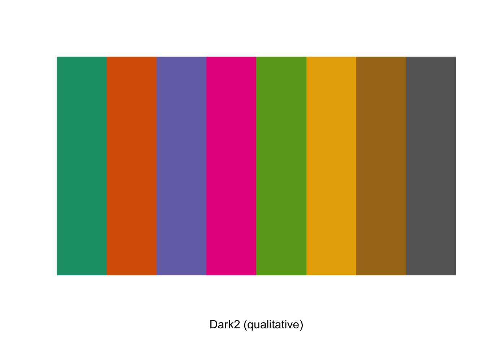
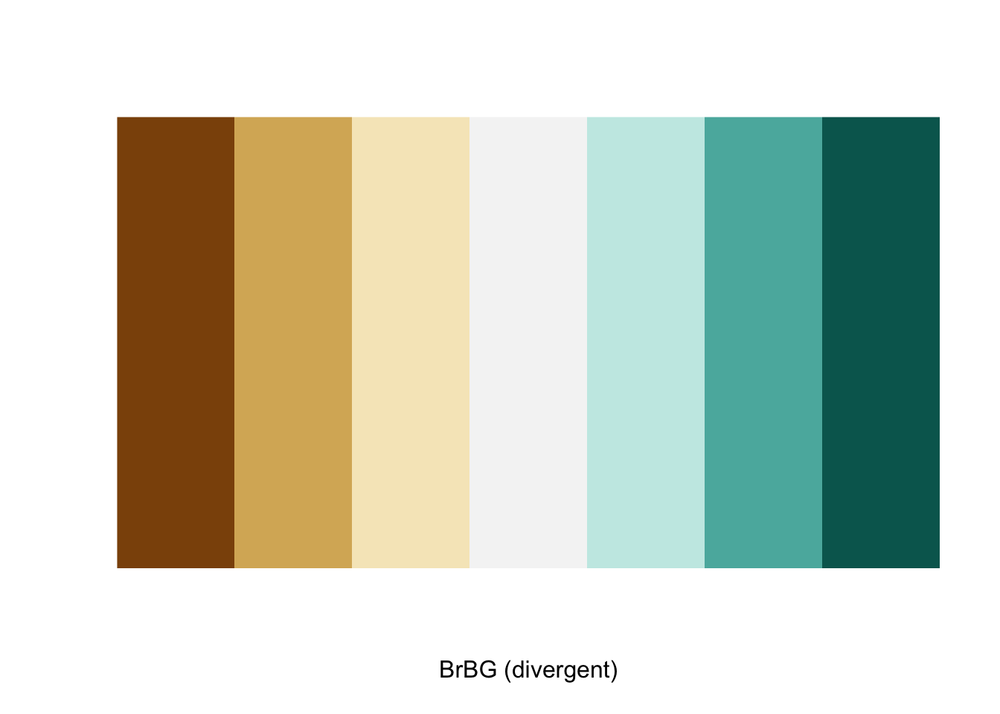
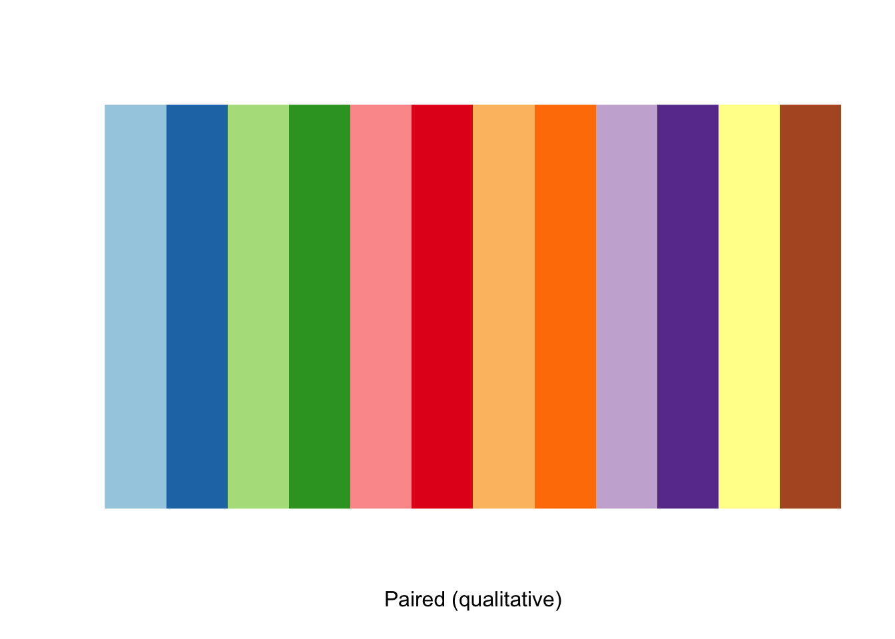
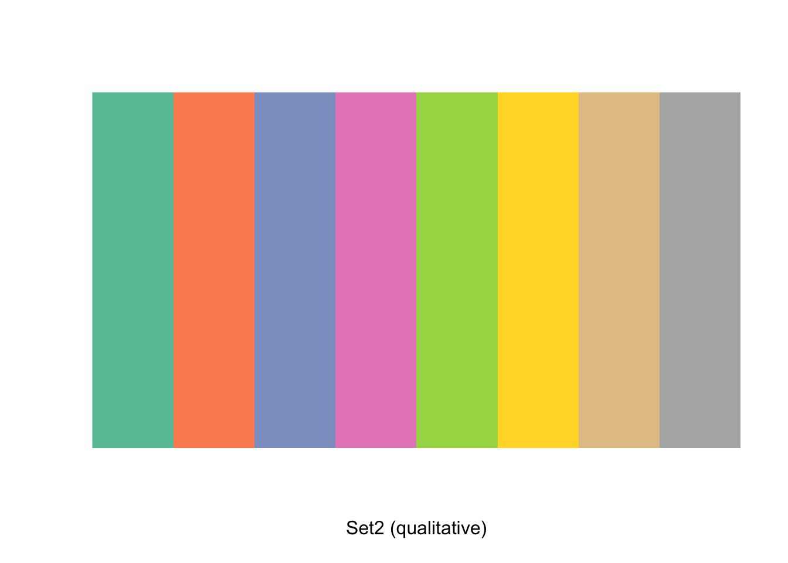
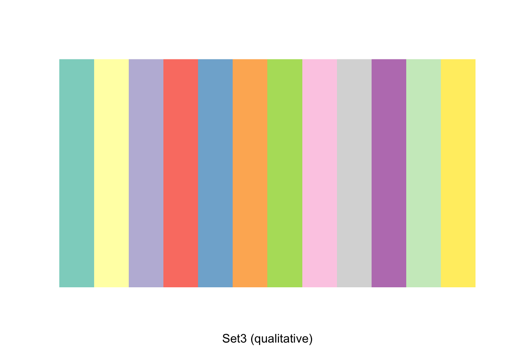
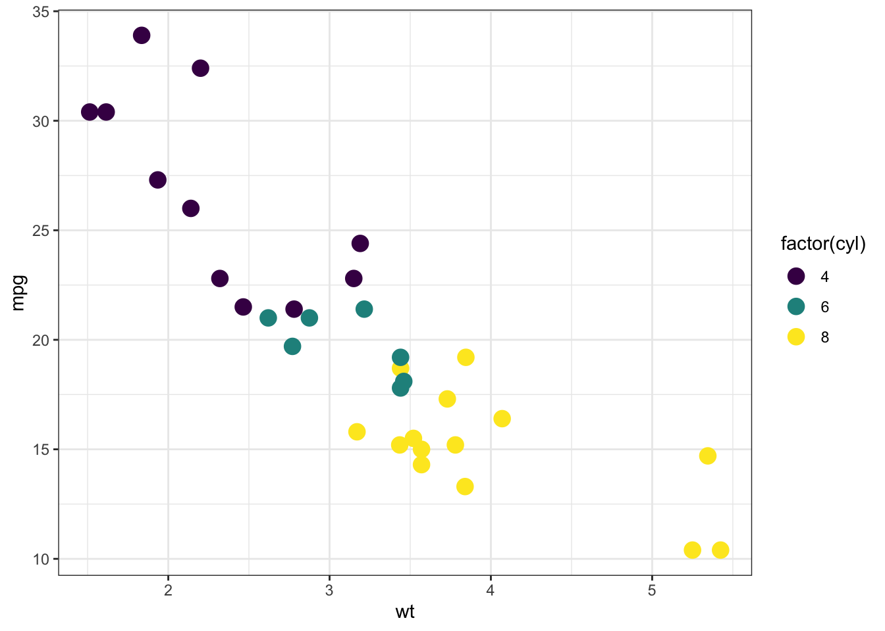
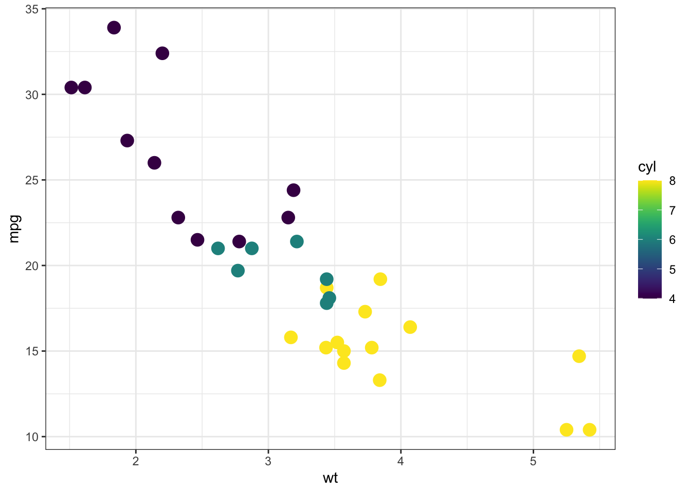
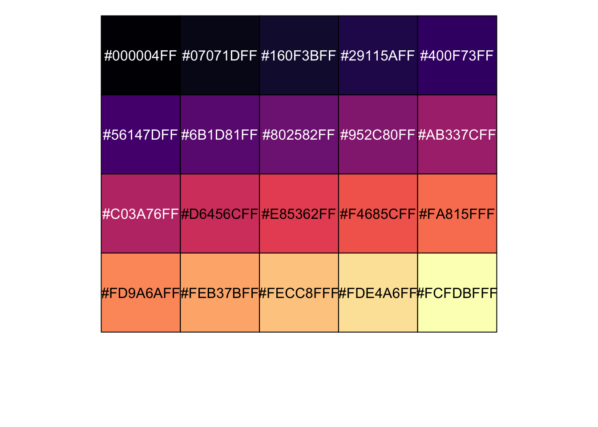
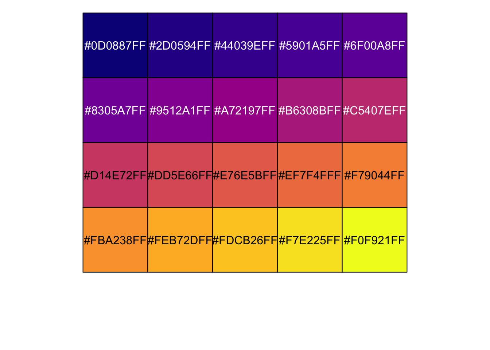
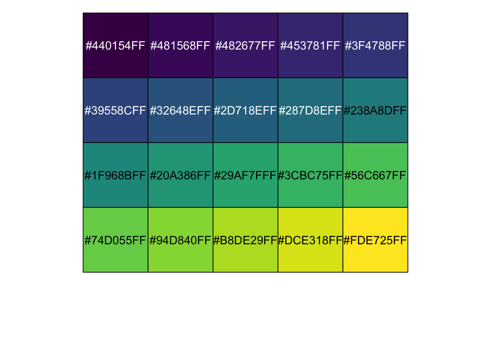

library(viridis)Loading required package: viridisLite# get certain number of colours from viridis palette
newcols = viridis(8, option = "B")Synthesis of links and resources on colours & data visualization
As I need to reach for this information often I have decided to dedicate a solo post on all things colour related.
Figures are an important part of any publication. They are often the first thing readers look at and will help usually are the deciders as to whether non-specialists are going to read on…a good figure goes a long way! If you can spend the time it is well worth it (within reason of course). A good read on some do and dont’s for figures by Rougier et al. 2014 PLOS comp biol, while your at it check out this one by Mensh and Kording 2017.
🔗 General colour resources
🔗 R packages and resources
Examples
Example for viridis to get 8 colours
library(viridis)Loading required package: viridisLite# get certain number of colours from viridis palette
newcols = viridis(8, option = "B")RColour brewer - display colours and get their hex numbers
library(RColorBrewer)
# View a single RColorBrewer palette by specifying its name
display.brewer.pal(n = 8, name = 'Dark2')
# Hexadecimal color specification
brewer.pal(n = 8, name = "Dark2")[1] "#1B9E77" "#D95F02" "#7570B3" "#E7298A" "#66A61E" "#E6AB02" "#A6761D"
[8] "#666666"More RColourbrewer palettes
# BrBG
display.brewer.pal(7,"BrBG")
brewer.pal(n = 7, name = "BrBG")[1] "#8C510A" "#D8B365" "#F6E8C3" "#F5F5F5" "#C7EAE5" "#5AB4AC" "#01665E"# Paired
display.brewer.pal(12,"Paired")
brewer.pal(n = 12, name = "Paired") [1] "#A6CEE3" "#1F78B4" "#B2DF8A" "#33A02C" "#FB9A99" "#E31A1C" "#FDBF6F"
[8] "#FF7F00" "#CAB2D6" "#6A3D9A" "#FFFF99" "#B15928"# Set2
display.brewer.pal(8,"Set2")
brewer.pal(n = 8, name = "Set2")[1] "#66C2A5" "#FC8D62" "#8DA0CB" "#E78AC3" "#A6D854" "#FFD92F" "#E5C494"
[8] "#B3B3B3"# Set3
display.brewer.pal(12,"Set3")
brewer.pal(n = 12, name = "Set3") [1] "#8DD3C7" "#FFFFB3" "#BEBADA" "#FB8072" "#80B1D3" "#FDB462" "#B3DE69"
[8] "#FCCDE5" "#D9D9D9" "#BC80BD" "#CCEBC5" "#FFED6F"Difference between discrete and continuous colours in a figure
library(viridis)
library(ggplot2)
p <- ggplot(mtcars, aes(wt, mpg))
p + geom_point(size=4, aes(colour = factor(cyl))) +
scale_color_viridis(discrete=TRUE) +
theme_bw()
p + geom_point(size=4, aes(colour = cyl)) +
scale_color_viridis(discrete=FALSE) +
theme_bw()
Show hex values of viridis palettes
library(scales)
Attaching package: 'scales'The following object is masked from 'package:viridis':
viridis_palshow_col(viridis_pal()(20))
show_col(viridis_pal(option = 'A')(20))
show_col(viridis_pal(option = 'B')(20))show_col(viridis_pal(option = 'C')(20))
show_col(viridis_pal(option = 'D')(20))
Make a vector with hex values of colours
# number of colours you want
q_colors = 15 # for no particular reason
v_colors = viridis(q_colors, option = 'D')
v_colors [1] "#440154FF" "#481B6DFF" "#46337EFF" "#3F4889FF" "#365C8DFF" "#2E6E8EFF"
[7] "#277F8EFF" "#21908CFF" "#1FA187FF" "#2DB27DFF" "#4AC16DFF" "#71CF57FF"
[13] "#9FDA3AFF" "#CFE11CFF" "#FDE725FF"